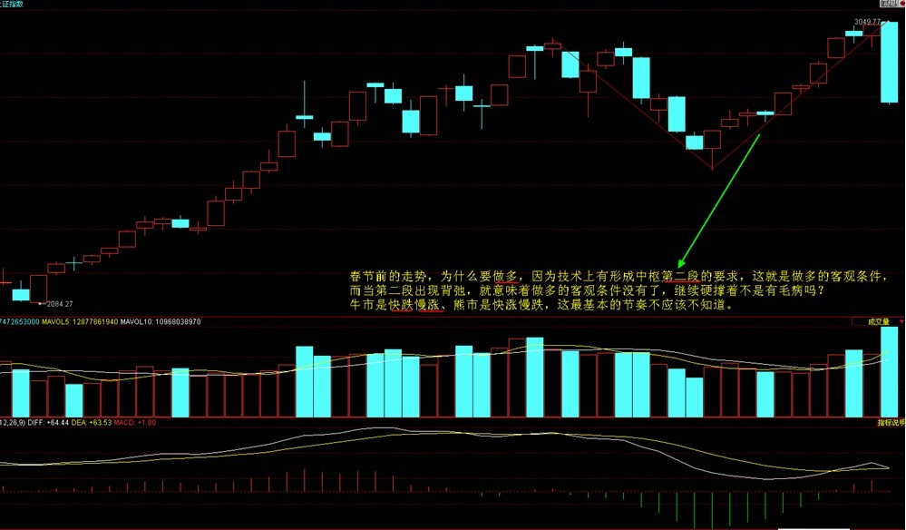
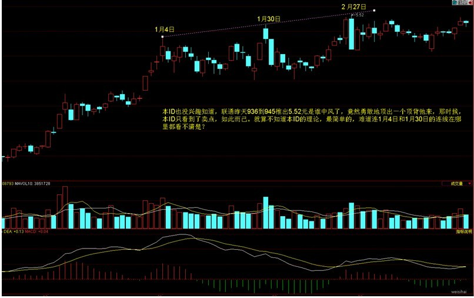
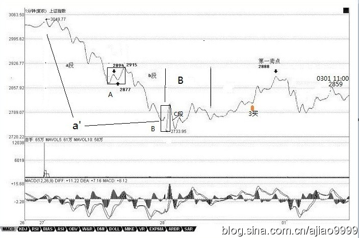
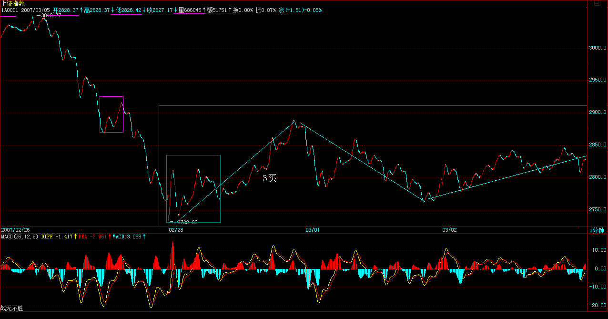
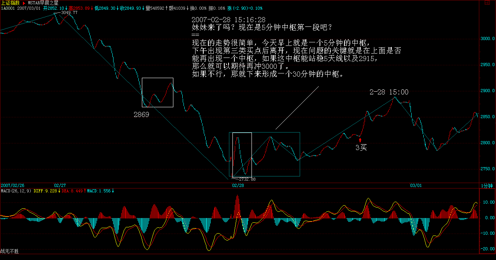
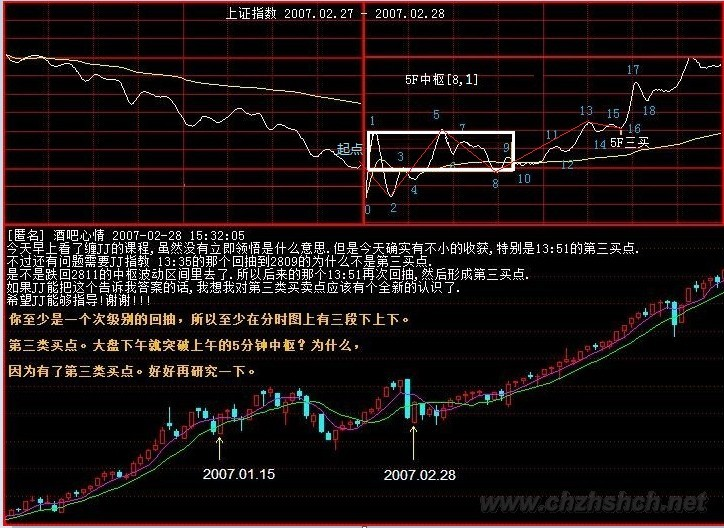
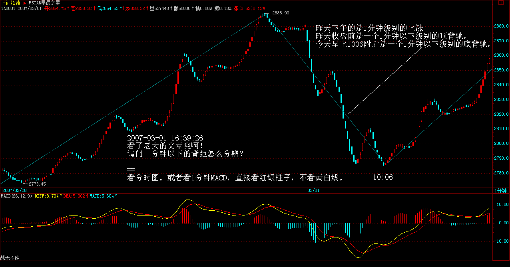
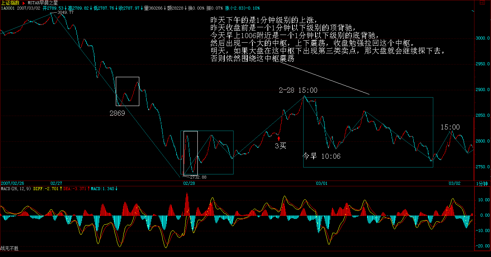
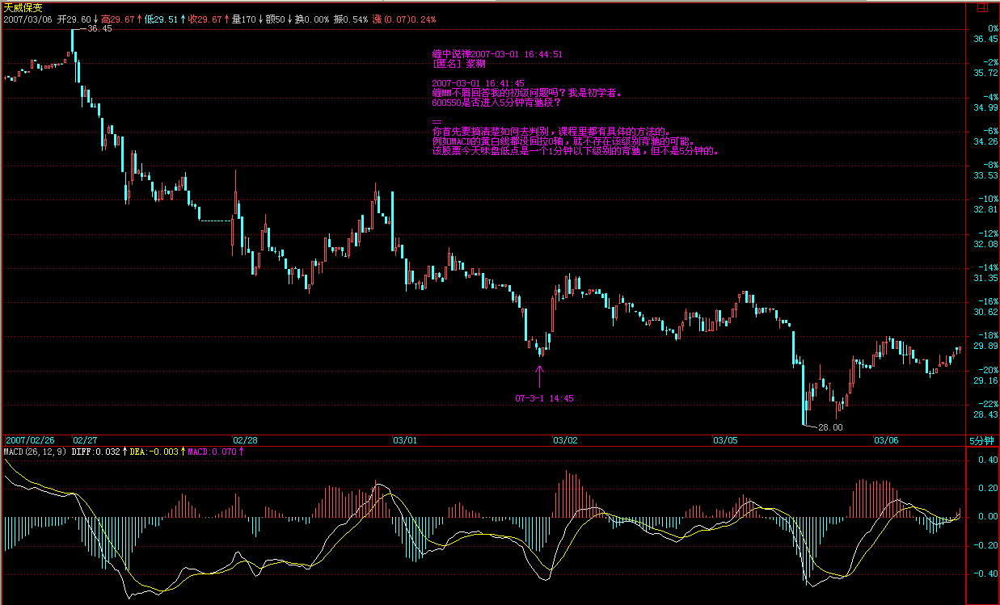
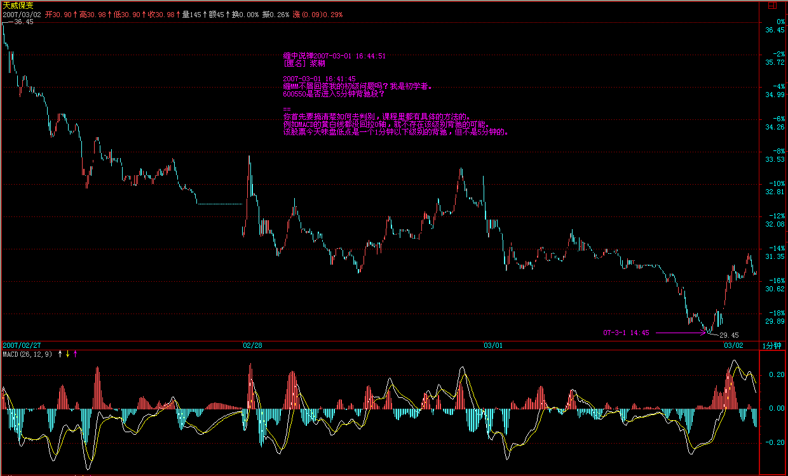

教你炒股票32：走势的当下与投资者的思维方式
(2007-02-28 08:44:37)
投资者最大的毛病，就是只有一种思维方式，把自己的喜好当成了市场的现实。按这种逻辑，做多的就永远要做多，做空的就永远要做空，那不有毛病吗？好象这次，春节前的走势，为什么要做多，因为技术上有形成中枢第二段的要求，这就是做多的客观条件，而当第二段出现背弛，就意味着做多的客观条件没有了，继续硬撑着不是有毛病吗？
牛市是快跌慢涨、熊市是快涨慢跌，这最基本的节奏不应该不知道。

有一种更坏的毛病就是涨了才高兴，一跌就哭着脸。请问，光做多，怎么把成本降为0？股票都是废纸，光涨光做多，永远顶着一个雷。在前面的文章已经多次强调，只有0成本的股票才是真正安全的。如果死多死空思维不改变，永远都是股票的奴隶。而且，跌完以后涨得最快的是什么？就是跌出第三类买点来的股票，看看000416上次的那一跌，一个完美的第三类买点，后面是一个月100%幅度的上涨，中间还带了一周的假期。大跌，就把眼睛放大，去找会形成第三类买点的股票，这才是股票操作真正的节奏与思维。
本ID的理论里没有风险的概念，风险是一个不可操作的上帝式概念，本ID的眼里只有买点、卖点，只有背驰与否，这些都是有严格定义的、可操作的，这才是让股票当你奴隶的唯一途径。
有人可能要反问本ID，你不是说中国的地盘中国人做主吗？请问，难道中国人做主，就只能做多的主，不能做空的主？这还算什么主？如果你把握了本ID的理论，严格按买点买、卖点卖，那你就是股票的主人。所谓汉奸，不过是希望通过他们的伎俩来把中国的血给吸走，而如果你有本事让汉奸低卖高买，那汉奸就死定了。就像这次，去问问联通上谁吃了哑巴亏。前面本ID说过，N年前干过一个阻击，从14元一直阻击上25全出掉，也是春节前后的，算起来就10来个交易日，一分钱没花，为什么？就是把某些人的节奏给搞乱了，大家应该记得赵本山和范伟拍卖那场对话，有点类似。具体怎么样，以后和大家说如何阻击的时候再说。不过可以告诉大家最终的结果，那股票最终跌回3元多。
股票，如同跳舞，关键是节奏，节奏一错，就没法弄了。买点买、卖点卖，就是一个最合拍的节奏，任何不符合这个节奏的，都要出乱子。例如，你是按30分钟级别操作的，明明顶背驰了，你不卖，一定要想着还要高，然后底背驰的时候忍不住了，杀出去，这样下来，你很快就不用玩股票了，因为股票很快就玩死你。走势有其节奏，你操作股票，如同和股票跳舞，你必须跳到心灵相通，也就是前面说的，和那合力一致，这样才是顺势而为，才是出色的舞者。如果不明白的，今天去跳一下舞，找一个舞伴，把他的节奏当成股票的节奏，感应一下。
感应，是当下的，如果当下你还想着前后，那你一定跳不好舞。股票也一样，永远只有当下的走势状态，股票的走势，没有一个必然的、上帝式的意义，所有的意义都是当下赋予的。例如，一个30分钟的a+A+b+B+c的向上走势，你不可能在A走出来后就说一定有B，这样等于是在预测，等于假设一种神秘的力量在确保B的必然存在，而这是不可能的。那么，怎么知道b段里走还是不走？这很简单，这不需要预测，因为b段是否走，不是由你的喜好决定的，而是由b段当下的走势决定的。如果b段和a段相比，出现明显的背驰，那就意味着要走，否则，就不走。而参考b段的5分钟以及1分钟图，你会明确地感觉到这b段是如何生长出来的，这就构成一个当下的结构，只要这个当下的结构没有出现任何符合区间套背驰条件的走势，那么就一直等待着，走势自然会在30分钟延伸出足够的力度，使得背驰成为不可能。这都是自然发生的，无须你去预测。
详细说，在上面例子30分钟的a+A+b+B+c里，A是已出现的，是一个30分钟的中枢，这可以用定义严格判别，没有任何含糊、预测的地方。而b段一定不可以出现30分钟的中枢，也就是只能最多是5分钟级别的。如果b段一个5分钟级别的开始上涨已经使得30分钟的图表中不可能出现背驰的情况，那么你就可以有足够的时间去等待走势的延伸，等待他形成一个5分钟的中枢，一直到5分钟的走势出现背驰，这样就意味着B要出现了，一个30分钟的新中枢要出现了。是否走，这和你的资金操作有关了，如果你喜欢短线，你可以走一点，等这个中枢的第一段出现后，回补；第二段高点看5分钟或1分钟的背弛出去，第三段下来再回补，然后就看这个中枢能否继续向上突破走出c段。注意，c段并不是天经地义一定要有的，就像a也不是天经地义一定要有的。要出现c段，如同要出现b段，都必须有一个针对30分钟的第三类买点出现，这样才会有。所以，你的操作就很简单了，每次，5分钟的向上离开中枢后，一旦背驰，就要出来，然后如果一个5分钟级别的回拉不回到中枢里，就意味着有第三类买点，那就要回补，等待c段的向上。而c段和b段的操作是一样的，是否要走，完全可以按当下的走势来判断，无须任何的预测。不背驰，就意味着还有第三个中枢出现，如此类推。显然，上面的操作，不需要你去预测什么，只要你能感应到走势当下的节奏，而这种感应也没有任何的神秘，就是会按定义去看而已。 那么，30分钟的a+A+b+B+c里，这里的B一定是A的级别？假设这个问题，同样是不理解走势的当下性。当a+A+b时，你是不可能知道B的级别的，只是，只要b不背驰，那B至少和A同级别，但B完全有可能比A的级别大，那这时候，就不能说a+A+b+B+c就是某级别的上涨了，而是a+A+b成为一个a`，成为a`+B的意义了。但，无论是何种意义，在当下的操作中都没有任何困难，例如，当B扩展成日线中枢，那么就要在日线图上探究其操作的意义，其后如果有c段，那么就用日线的标准来看其背驰，这一切都是当下的。至于中枢的扩展，其程序都有严格的定义，按照定义操作就行了，在中枢里，是最容易打短差降成本的，关键利用好各种次级别的背驰或盘整背驰就可以了。
所以，一切的预测都是没意义的，当下的感应和反应才是最重要的。你必须随时读懂市场的信号，这是应用本ID理论最基础也是最根本的一点。如果你连市场的信号、节奏都读不动，其他一切都是无意义的。但，还有一点很重要，就是你读懂了市场，但却不按信号操作，那这就是思维的问题了，老有着侥幸心理，这样也是无意义的。按照区间套的原则，一直可以追究到盘口的信息里，如果在一个符合区间套原则的背驰中发现盘口的异动，那么，你就能在最精确的转折点操作成功。本ID的理论不废一法，盘口工夫同样可以结合到本理论中来，但关键是在恰当的地方，并不是任何的盘口异动都是有意义的。本ID的理论由于是从市场的根子上考察市场，所以把握了，你就可以结合各种理论，什么基本面、政策面、资金面、庄家等等因数，这些因数如何起作用、有效与否，都在这市场的基本走势框架上反应出来。
由于市场是当下的，那么，投资者具有的思维也应该是当下的，而任何习惯于幻想的，都是把幻想当成当下而掩盖了对当下真实走势的感应。这市场，关键的是操作，而不是吹嘘、预测。有人可能要反问，怎么这里也经常说些类似预测、吹嘘的话，例如前两天本ID说让汉奸砸盘联通。请问，汉奸可能有几十亿股的联通吗？汉奸砸盘本ID就要接？本ID为什么不可以先砸？为什么一定要在顶背弛接砸盘？本ID又没毛病，汉奸如果有爱好，最好在底背弛的时候砸盘，本ID一定欢迎。而对于本ID来说，如果有些话能当百万兵，本ID凭什么不说？本ID也没兴趣知道，联通昨天936到945推出5.52元是谁中风了，竟然勇敢地顶出一个顶背弛来，那时候，本ID只看到了卖点，如此而已。就算不知道本ID的理论，最简单的，难道连1月4日和1月30日的连线在哪里都看不清楚？

所有非汉奸、非奸细的各位请注意了，这里奸细少不了，如果你把这里当成一个纯粹的课堂，那就太小看这里了。但，有一点是无疑的，就是一旦你掌握本ID的理论，你根本无须听任何话，无论谁的话，任何话都是废话，走势永远第一。牛顿不能违反万有引力，本ID也不能违反本ID的理论，这才是最关键的地方。而只有这样，才有可能有一个正确的思维基础。你无须尊重本ID，甚至，你学会本ID的理论，还可以专门和本ID作对，企图在市场上挣本ID的钱，但你必须尊重本ID的理论，就像你必须尊重万有引力一样，否则市场的走势每分每秒都会给你足够的教训。
每日解盘(2007-02-28 15:15:26 )
缠中说禅：
2007-02-28 15:15:26 今天之所以如此早就发课程，就是让各位现场学习。看看a+A+b+B+c是如何变成a`+B，如果早上不敢回补，那么1351的第三类买点，怎么都应该回补了。而且个股与大盘的节奏不同，这两天深圳低价本地股表现怎样，今天哪个板块先涨停的，除非你的眼睛有毛病，大概都应该能看明白了。如果今早没看到课程的，那么就好好对照这两天的1分钟图研究一下。如果把本课程吃透，那你的水平可以上初二了。
大盘后面的走势很简单，就是2915，昨天一分种中枢的高点。如果看不懂的，就看5日线。上不去，那就要二次探底，否则就V型反转，重新攻击3000点。

至于个股方面，没什么可说的，今天的课程里专门让大家去找第三类买点的：“大跌，就把眼睛放大，去找会形成第三类买点的股票，这才是股票操作真正的节奏与思维。”不仅是思维本身，心态如何调整，有了这次现场直播，大家对这节奏，不知道有没有感觉。今天一早看课程又能理解的，有福了。
表扬一下CCTV，为了这几句话：
[匿名] CCTV2007-02-28 10:20:59
[匿名] 老新手2007-02-28 09:53:25
第二个1分钟中枢形成，就看后面是否背驰了。
===
不一定，你仔细研究一下妹妹今天举的两个例子。
[匿名] CCTV2007-02-28 10:24:40
我觉得，大盘还存在一种可能，就是形成妹妹文章里说的a`+B，然后突破B直接上去。现在应该按a`+B来看了。
每日解盘(2007-03-01 15:42:20)
汉奸，本ID就把你们像面首一样玩弄！
(2007-03-01 15:42:20)
百团大战以后是什么，熟悉中国历史的没有不知道的，除非他是汉奸或鬼佬并且脑子进满了水。显然，中国的金融市场的很重要部分，被汉奸与鬼佬把持着，这一点已多次指出。不承认这一点，不是别有用心就是瞎了眼。用最简单的板块论，例如金融板块显然就是汉奸与鬼佬围剿的重灾区。特别，由于金融股多数都同时在其他市场上交易，因此更容易成为他们企图控制中国金融市场的利器。
有些幼稚的人，例如一个叫什么水皮的，昨天还傻忽忽地说，谁谁谁发表什么文章，就要涨了。中国最可怕的不是汉奸，而是那些弱智的所谓爱国者，喊两句口号就等于爱国，这爱国也太没技术含量了。喊口号是赶不走日本人的，同样杀不死汉奸和鬼佬。在金融市场中哪里有什么和谐，那是血和肉！别老大不小的还装天真！
本ID承认，本ID现在所能集合的力量，还不足以和汉奸与鬼佬进行全方位大集团的会战，这都是前期保守的金融政策所导致的！那种希望杀光大鳄的政策，只是为外国大鳄的入侵制造良好的环境。没有2000年前后可笑的金融政策，没有某些人中了海龟的迷幻。中国民间的力量也足以和外国鬼子在最大层面上进行会战了。
这就像百团大战一样，一个中级规模的阻击就会引发后面残酷的围剿。但历史却是这样发展的，所谓的围剿并没有达到任何目的，日本人最终还是滚出去了。确实，汉奸们可以不断打压金融股来控制走势，就像日本人占据着大中小城市。但二、三线股有着广阔的纵深空间，这就是本ID们的地盘，没汉奸、鬼佬们什么事情。
在大跌前一天，本ID说了深圳本地低价股，大跌又有什么影响？不照样连续涨停？同时还强调了农业、环保的股票，怎么样大家都有眼睛看。注意，各位没必要一定要看本ID所说那14只股票里的农业、环保，只要是这个板块，只要是低价，走势有买点出现的都没问题。环保其实还包括新能源。
本ID最近的口号就是，对5元上下的三线股发动最残酷的攻击，汉奸、鬼佬最好把工行砸回4元，把人寿砸回20元，那时候自然去接管你们，让你们永远滚出中国。游击战，把汉奸和鬼佬像面首一样玩弄。
N年前，本ID已经到处呼吁，中国人的盘子要中国人控着，现在还不是最可怕的情况，毕竟，大的国有股还抓在手里，但如果还不警惕，汉奸自然有办法把那些都蒙掉。温先生的文章不是说要金融安全吗？盘子控在汉奸与鬼佬手里，是没有安全可言的，这就是最简单的道理。
今天的盘子没什么可说的，上不了5日线就要二次探底，就这么简单。现在就看这在2800附近的30分钟中枢如何演化的，这是最近的一个唯一的主题

缠中说禅：2007-02-28
08:50:44
市场的任何走势都是最好的免费训练，纸上谈兵没用的，关键是实际操作，心手合一才可以，否则就是浪费时间。市场只认识走势本身，其他一切都是多余的，不经过一番修炼，是不能成器的，各位好自为之吧。今天早点把文章贴出来，也希望各位在大的震荡中，能有一个顿悟，这样，就真的对得起这震荡与本ID的文章了。
[匿名] CCTV 2007-02-28 10:20:59
[匿名] 老新手 2007-02-28 09:53:25
第二个1分钟中枢形成，就看后面是否背驰了。 不一定，你仔细研究一下妹妹今天举的两个例子。
2007-02-28 10:24:40
我觉得，大盘还存在一种可能，就是形成妹妹文章里说的a`+B，然后突破B直接上去。现在应该按a`+B来看了。

缠中说禅：2007-02-28
15:24:53
[匿名] 水房姑娘 2007-02-28 15:21:18
缠Ｍ，现在开始炒垃圾股了，是否行情到第三波要玩完了？
==
就算是第三波，也是第一大波的第三波，这轮牛市，走个10年8年有什么奇怪的？上一次牛市，一共走了13、14年。
缠中说禅：2007-02-28
15:29:13
[匿名] 小鸟 2007-02-28 15:16:28
妹妹来了吗？现在是5分钟中枢第一段吧？
==
现在的走势很简单，今天早上就是一个5分钟的中枢，下午出现第三类买点后离开，现在问题的关键就是在上面是否能再出现一个中枢，如果这中枢能站稳5天线以及2915，那么就可以期待再冲3000了。如果不行，那就下来形成一个30分钟的中枢。

缠中说禅：2007-02-28
15:33:55
[匿名] 面首甲 2007-02-28 15:31:21
“大盘后面的走势很简单，就是2915，昨天一分种中枢的高点”，缠姐，中枢的高低点不是Min(a1,b1,c1),Max(a2,b2,c2)吗？为什么会是2915呢？不是2894吗？
=
对不起，说得不太严谨，是围绕中枢波动的最高点GG，中枢的上沿在2894附近
·
缠中说禅 2007-02-28 15:35:28
[匿名] 酒吧心情 2007-02-28 15:32:05
今天早上看了缠JJ的课程,虽然没有立即领悟是什么意思.但是今天确实有不小的收获,特别是1351的第三买点.不过还有问题需要JJ 指教，1335的那个回抽到2809的为什么不是第三买点.是不是跌回2811的中枢波动区间里去了.所以后来的那个1351再次回抽,然后形成第三买点.如果JJ能把这个告诉我答案的话,我想我对第三类买卖点应该有个全新的认识了.希望JJ 能够指导!谢谢!!!
==
你至少是一个次级别的回抽，所以至少在分时图上有三段下上下

教你炒股票32：回复

·
缠中说禅 2007-02-28 15:38:56
[匿名] 满目山河 2007-02-28 15:32:45
缠妹妹真是出其不意啊，哪知道这么早就出新东东了啊，刚来，才看到．缠妹妹教我们是不是有点着急啊？我倒是希望早点看到全部课程．期待中．
==
这种现场版本，现场看，印象深，事后看，即使不管那些说闲话的，对大家的理解也不太好。今天没看到的，只能看已经形成的图形去想象那种现场气氛了。
·
缠中说禅 2007-02-28 15:41:05
·
缠中说禅：2007-02-28
15:36:28
[匿名] 快 2007-02-28 15:35:27
现在应该说第一个5分钟中枢快完成了吧?
==
你还没理解今天的课程，早上已经形成，而下午出现第三类买点，那就确认结束了。
缠中说禅：2007-02-28
15:43:20
[匿名] 小鸟 2007-02-28 15:37:06
再一次体会：不做预测，只看当下！这和我事先估计的情况完全不一样
==
预测其实也是可以的，但你要把所有可能的情况都列清楚，像本ID现场直播的今天走势，你没想到，所以就漏掉了，其实，所有的情况，基本就是你预测的那种以及今天直播的这种，把这些情况弄清楚，就可以上初二了。继续努力吧。
缠中说禅：2007-02-28
15:46:14
[匿名] 小鸟 2007-02-28 15:42:27
要看明天是否形成第二个5分钟中枢并且是否站稳，是吗？
==
如果你技术可以，就可以利用中枢的震荡弄点对冲，例如5日线冲不破，先出来，跌回来，不出现单边情况，能形成中枢的，再补回来。当然，这要看具体的个股，有些股票走得强，已经出现上涨走势，那直接看个股的背驰就可以。技术不行的，就操作少点。先研究清楚了。（买卖操作）
缠中说禅：2007-02-28
15:51:25
[匿名] 惊鸿一慕 2007-02-28 15:44:33
谢谢缠姐姐的理论，昨天在26.67把600888卖了，进入日线背驰段立即清仓！今天下午在23.60又全部补回来了，赚了13％，真爽！缠姐姐，今天600888的低位买点形成了第三类买点，我的理解正确嘛？谢谢
==
这只能算依然在中枢里的震荡，这个中枢级别很大，一旦往上突破，空间不小，短线就看什么时候突破了，确认以一个至少是日线上的第三类买点为标准。可以参考一下60043222元那次回抽，不过那个中枢没这个大，突破起来就比较轻松。
缠中说禅：2007-02-28
15:58:26
[匿名] 瞎鼓捣 2007-02-28 15:52:33
奇怪！我的问题怎么找不到了？再打一遍
假如在30分钟的买点进入的，是不是要等30分钟背弛才出，有没有不等到30分钟背弛就发生转折的，如果有这种情况该怎么操作？
==
你还没理解本课程，如果是a+A+b+B+c，那自然就是30分钟背驰。如果演化成a`+B，那可能就是一个最低级别的背驰引发一个B，然后跌破或升破B，这就不一定要等什么30分钟的背驰，因为这时候的B已经是日线级别以上的，就要按这个大的中枢来判断了。好好理解一下，这是两种不同的情况，后面还有课程详细分析的，不过可以先自己思考一下。
缠中说禅：2007-02-28
16:00:07
[匿名] 也许认识你 2007-02-28 15:55:15
加一个问题，第3类买点出来后，上涨一段，然后直接就下跌了，跌到前面的那个中枢，这种情况应该怎么处理？
==
上涨一段如果出现背驰，那你早出了，等不到下跌的时候，如果不出现背驰，就至少会形成一个新的中枢在上面，更不存在任何问题了。
缠中说禅：2007-02-28
16:01:29
[匿名] 后知后觉 2007-02-28 15:58:33
承蒙禅主关照,今天的第三类买点看到,也把握了.也在群里根艮同学说了.只是买的股票还没起来.
==
你要根据股票自身的走势，大盘的只能是参考。一般来说，只要大盘不是单边下跌，那二、三线个股受大盘的影响，不会太大。
缠中说禅：2007-02-28
16:03:25
[匿名] 箭梦弦歌 2007-02-28 15:56:25
在a`+B形成过程中，我唯一的依据是盘整的回抽越来越高，所以认为可能不能跌破本中枢，直到第三类买点形成，才最终确认a+B形成了------我的想法对吗？缠mm，盼回答！
==
B中的走势，也有次级别的，一样可以用背驰之类的方法决定买卖点。盘整其实可以很简单处理，就是按次级别来看就行了，一段段分解操作。当然，有些特别小级别的，就没必要操作了。
缠中说禅：2007-02-28
16:10:12
[匿名] 大盘 2007-02-28 16:01:36
请问博主，为什么不可以认为上海指数1月以来到目前都还是在1月形成的日线中枢里震荡延伸行情呢，不是每次30分钟上升后又30分钟回到中枢里吗，
日线中枢的扩展不是要前后两个不重叠的日线中枢的震荡高低点有瞬间重合才算吗
我怎么觉得好多股票目前都是第一个日线中枢延伸呢，中枢延伸的低点和发生转折是根据什么来判断，也是根据延伸段内次级别的背离来判断吗，比较迷惑
==
延伸不能超过9个次级别，否则就变成更大级别的，这根据定义很容易理解。例如，9个30分钟的延伸，每三个又构成日线级别，三个日线级别自然就是周线级别。你可以数数现在究竟有多少个了，已经足够形成周线中枢了。注意，如果股价是一条直线没波动的，那不能这样加，例如，直接封涨停的，就只能算最多1分钟级别的，因为要构成大级别的，首先要有波动，没波动就不存在扩展、延伸的问题，
缠中说禅：2007-02-28 16:12:29
总书记 2007-02-28 16:03:47
博主，走出A,就一定能有b吗?!如果在A里面就发生反转呢?首先 走出b的条件是什么?如果A就形成一个日线的中枢呢?还有现在大盘是不是在一个五分钟的A内? 那前面的a也就只有一个中枢了?博主 前面我的很多你都没有回答 今天请你一定要回答啊!
多谢多谢啊!
==
上面不是已经反复说了？第三类买点。大盘下午就突破上午的5分钟中枢？为什么，因为有了第三类买点。好好再研究一下。
缠中说禅：2007-02-28 16:15:33
[匿名] 大盘 2007-02-28 16:10:38
请问博主：
关于中枢扩展，例如第2个5分钟中枢出现顶部背离，随后的下跌扩展成30分钟的中枢，如果随后的下跌特别厉害，不仅跌破第一个5分钟的中枢高高点（或者震荡的高高点），而且跌破前面已经有的一个日线中枢中枢高高点（或者震荡的高高点），是不是这种情况中枢就直接扩展成周线中枢，还是仍然算是日线中枢延伸
==
5分钟的背驰是否要走，你要根据当时30分钟、日线的情况来看，如果大级别在主升段，就算走了也要买回来，如果符合区间套的情况，那就不能随便买回来了。所以根本不存在跌回来怎么办的问题，因为那时候，你需要考虑的是买不买，而不是卖不卖。别把节奏搞错了。
缠中说禅：2007-02-28 16:22:01
[匿名] 三藏 2007-02-28 16:19:04
老大没看见，再发一次，真的不懂啊，老大，你今天说的，大盘后面的走势很简单，就是2915，昨天一分种中枢的高点。如果看不懂的，就看5日线。上不去，那就要二次探底，这段话的原理是什么啊？为什么没站住ZG就会再次下跌呢？就是这探底的原理我不知道，老大麻烦解释一下，谢谢！！
==
每个中枢的GG、DD都是最重要的位置之一，都会产生阻力或支持，原理以后课程再说了。先下，再见。
缠中说禅：2007-03-01 16:03:18
[匿名] 淡定 2007-03-01 15:48:38
楼主好啊！今天郁闷了一天，偶咋偏偏进了汉奸围剿的重灾区了呢，大盘大跌的那天还进了001，现在该如何是好啊？
==
元旦以后一直就不让碰这类股票，都在说二、三线，如果买了，只能等着了。最晚下半年会起来的。
缠中说禅：2007-03-01
16:06:41
[匿名] 努力学习 2007-03-01 15:46:34
先顶再看,938今天震荡幅度到了9%...可惜高位没走..
==
有卖点就要出，别整天事后才后悔，这样永远学不好的。
缠中说禅：2007-03-01
16:12:12
[匿名] 人寿 2007-03-01 16:04:29
缠妹妹对人寿这么痛恨？打倒20我可就惨了。平安今天上市好像定价比较低，后市妹妹怎么看？
-
人寿现在是空方主控着，而且最重要是战略投资还有一大批，要等这些因数完了才能大起。不过中线问题不大，就拿着，找机会在下面补点就解套挣钱了。
缠中说禅：2007-03-01
16:19:57
[匿名] i3618 2007-03-01 15:55:00
请教博主，是否在３０分钟下出现第三类卖点，就要继续向下呢？理论上有可能出现第三类买点吗？
==
第三类买点是在中枢上面出现的。震荡的处理很简单，就是看次级别的背驰弄对冲。当然，最好就是找有大级别第三类买点的强势股票，这样，大盘只要不一天内大幅下跌，一般都很安全。
缠中说禅：2007-03-01
16:23:37
[匿名] 后知后觉 2007-03-01 16:19:21
禅主，虽然有人问过了。我还想问一下：
今天上市 的平安，您怎么看？ 当然不是技术上事，希望您给予指点！
==
其实明白了本ID前面的课程，这都很简单。现在48附近有一个小中枢，能否上去形成一个大中枢就是能否短线走强的关键。没出现这个之前，基本不用关注。等在下面形成中枢后，如果是短线的，就找一个短线底背驰介入。从中线看，这个位置套不住人。
缠中说禅：
2007-03-01 16:28:38
缠姐，我又有问题了。
对于a'+B，既然此a'已非彼a,此B也非彼B。为何不跳高一个级别直接看成a+A呢？
这样理解对吗？
=========================
此时B还知是什么级别，可以是彼B，也可以扩展成非彼B的高一级别的A，把a'看成高一级别的a可以，还没有高一级别的A，彼B暂不能看成高一级别的A。
--------------------------
谢谢你的回答。
不过我所说的是在a+A+b+B+c已经确定失效的情况下。就像昨天的上海大盘，在出现1分钟第3类买点时。这时我们虽然不能判定未来的走势，但是可以对a'+B有所预期.
其实，我所提的只是个纯概念的问题。就是为什么要定义成a'+B，而不定义成高级别的a+A？这样通用性不是更好吗？
==
确实，写成a`+A`是最好的。不过，关键是要明白意思。
缠中说禅：2007-03-01 16:26:07
[匿名] 你的样子 2007-03-01 16:22:37
昨天下午的是1分钟级别的上涨，昨天收盘前是一个1分钟以下级别的顶背驰，今天早上1006附近是一个1分钟以下级别的底背驰，然后出现一个大的中枢，上下震荡，收盘勉强拉回这个中枢。明天，如果大盘在这中枢下出现第三类卖点，那大盘就会继续探下去。否则依然围绕这中枢震荡。“昨天下午的是1分钟级别的上涨，昨天收盘前是一个1分钟以下级别的顶背驰”
老大这段为什么一分中上涨，会是1分以下级别的顶背驰呢？是不是说一分也盘整背驰了，一分以下也背驰了，这个级别同步背驰？这段应该比今早的下跌大一级啊？是不是我说的这样？
还有老大说的“然后出现一个大的中枢”这个中枢是不是5分级别的？我对级别的判定始终掌握不好，是不是我说的这样，翘首企盼老大回答。
========
背驰的级别和上涨的级别没有什么必然的对应关系，要有对应关系，就必须满足区间套关系。这个问题比较复杂，下面的课程会说到的。
缠中说禅：
2007-03-01 16:36:50
[匿名] 兰兰 2007-03-01 16:31:25
缠姐好!
精确的定义我都看了,还有一些不明之处,请姐姐指点!
前一两天大盘走势看,分时图和1分钟图差不多,下跌第一个1分钟中枢可以认为是5分钟中枢吗?第2个是5分钟中枢也是1分钟中枢吗?分时图没有MACD看背驰,是看成交量吗?
姐姐的博客人气已经很旺了,特别是姐姐回答问题的时候,我经常刷不出画面,翻页也快,都插不上几句.
==
不能，5分钟的中枢必须有三个1分钟级别走势类型的重合。而1分钟的走势类型，怎么都至少有一个1分钟的中枢，如果你把1分钟当成最低级别的，那至少要有三根K线重合，有些连续的拉抬，直上直下的，就没有K线重合，所以不能看成是中枢。
MACD是MACD，和成交量没什么关系。
缠中说禅：2007-03-01
16:38:54
小明 2007-03-01 16:34:04
[匿名] dliss 2007-03-01 16:14:15
每天学到11点，还是没有感觉啊。看不懂，昨天刚弄了一个可以看1分钟周期的行情软件，跟着博主积累力量打汉奸，呵呵，博主经历丰富，如果写成网络小说，估计流行度N高
－－－－－－－－－
我觉得对于新手来说 最好不要做超短线 还是多看看日K线图，先找感觉。各种各样的图形形态了然于胸才可以
缠mm我说的对吗？
==
对，太短的，反应慢的就错过，很难把握。最短也要5分钟以上级别的，最好是30分钟以上的。
缠中说禅：2007-03-01
16:40:44
步点 2007-03-01 16:34:14
大跌真可怕。今天辛辛苦苦去抄底补回前几天卖出的PP们，不料收盘还是整体跌了1%。剩下的银子，等到2600点补。
==
昨天怎么不补？而且不是随便补的，最好是补有日线第三类买点的。
缠中说禅：2007-03-01
16:42:03
[匿名] 瞎鼓捣 2007-03-01 16:39:26
看了老大的文章爽啊！
请问一分钟以下的背弛怎么分辨？
==
看分时图。或者看1分钟MACD，直接看红绿柱子，不看黄白线。

- 缠中说禅2007-03-01 16:00:35 [举报]
[匿名] 小鸟
2007-03-01 15:54:33
妹妹，我觉得今天大盘1分钟怎么和昨天是一样的，只是级别更低
下跌时a+A+b+B+c因为b背驰了所以转化为a~+B。请问是这样的吗？
--
昨天下午的是1分钟级别的上涨，昨天收盘前是一个1分钟以下级别的顶背驰，今天早上1006附近是一个1分钟以下级别的底背驰，然后出现一个大的中枢，上下震荡，收盘勉强拉回这个中枢。明天，如果大盘在这中枢下出现第三类卖点，那大盘就会继续探下去。否则依然围绕这中枢震荡

缠中说禅：2007-03-01 16:44:51 [匿名] 浆糊 2007-03-01 16:41:45
缠MM不屑回答我的初级问题吗？我是初学者。
600550是否进入5分钟背驰段？
========
你首先要搞清楚如何去判别，课程里都有具体的方法的。例如MACD的黄白线都没回拉0轴，就不存在该级别背驰的可能。该股票今天味盘低点是一个1分钟以下级别的背驰，但不是5分钟的。


缠中说禅：2007-03-01 16:47:05 [匿名] 草草 2007-03-01 16:39:32
老师，我问了两次你都没有回答我问题。可能这个问题比较低级别：不过如果这个问题懂了，我大概知道中枢是什么了。 缠中说禅走势中枢就是至少三个连续次级别走势类型重叠部分所构成。这个重叠是什么意思？真的不懂了。能再举个例子说明哪个时间段是哪个大级别与次级别的重叠吗？
按我的理解：
中枢就是一个类似W的东西. 盘整可以由一个次级别的W够成，趋势要至少两个 W. W.盘整的之后上突出现回调确认后出现了底背离可以看作第三类买点。在下跌趋势出现底背离则应该是第一买点，买点买入后，出现顶背离则退出等待第二买点，任何第二卖点，都可以更低级别找到相应的第一买点。不知道我的理解对不对。老师能不能给我一个评价。活着CCTV等高手看看我的想法对不对。数学不懂，我只能靠视觉了：昨晚找了好多第三类买电的股票，山大华特，中信海直好像都出现了日线级别的第三类买点，大众公用也好像是。近期在观察天润发展，如果出现第一类买点就好了。周末打算这样做：扫描周线级别出现第三类买点的股票进行操作。昨天做了潜江药业一个涨停啊。谢谢缠老师。不知道我的说法对不对，请给点点评
========
例如，一段是从5元到2元，一段是1元到4元，你说重叠的区间是什么？三段的道理是一样的。
|